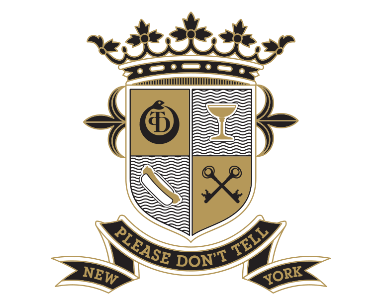
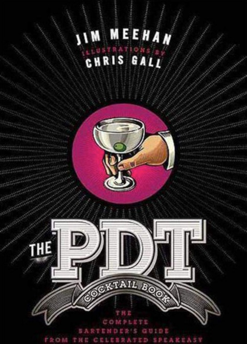
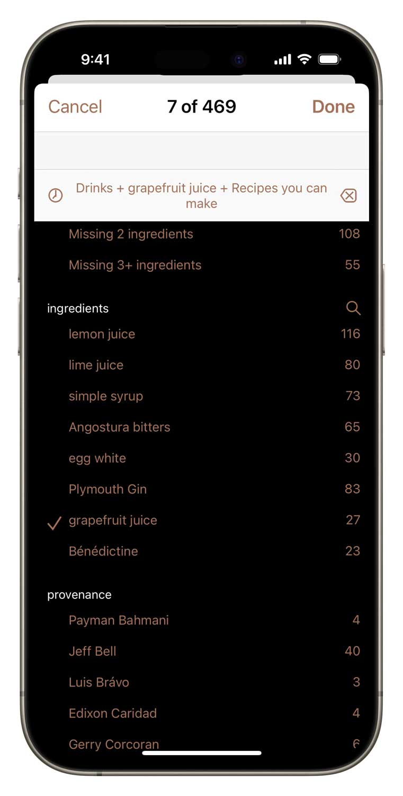
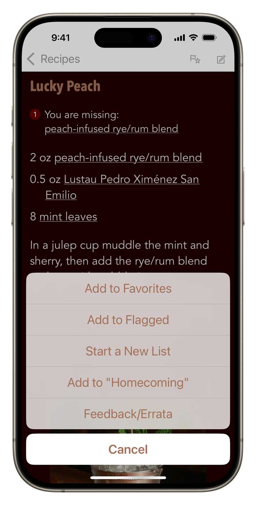

PDT Cocktails is the database of the famed New York City bar’s cocktail recipes, including specs for the house creations and the fine-tuned classics that were served during the bar’s peak years (2007–2015).
★★★★ by Feeling Free, Nov 14, 2023
I have the book and this app is a great adjunct to it. If you like this app, I recommend the book, as well. Great photos in the [app], more info about the drinks and wonderful feel all around. App lets you put in your stock and then suggests ingredients that may allow you to make a cocktail when you don’t have the exact ingredient.
Master class
PDT Cocktails presents 400 meticuluously tested specifications, plus PDT’s house-made syrups, infusions, and more. Reference photos are included for all the drinks and ingredients. The app can be used independently or as a companion to The PDT Cocktail Book, which the app augments with newer creations, newly-relevant historic recipes, and numerous revisions to earlier recipes based on ongoing experimentation by Jim Meehan.
#8 - Daniel Eun, Fall 2008
1-2 Punch - Jeff Bell, Summer 2013
100 Year Punch - Daniel Eun, Winter 2008
20th Century - W. J. Tarling, Café Royal Cocktail Book, 1937
21 Butt Salute - Jeff Bell, Fall 2011
21st Century - Jim Meehan, New York, 2007
38 Special - Jeff Bell, Spring 2011
ABCDEF - Jeff Bell, Winter 2010
Absinthe Drip - Jerry Thomas, The Bar-Tenders’ Guide, 1862
Ace in the Hole - Michael Klein, Winter 2011
After Nine - Jim Meehan, Winter 2012
Against All Odds Cocktail - Jim Meehan & David Slape & Gerry Corcoran, Summer 2008
Age of Enlightenment - Jim Meehan, Spring 2014
Águila Azteca - Jim Meehan, Summer 2008
Airmail - W. C. Whitfield, Here’s How, 1941
Alambic Fizz - Jeff Bell, Summer 2012
Algonquin - Selmer Fougner, Along the Wine Trail, 1935
Alma Mater - Jim Meehan & Karen Fu, Spring 2011
Ambrosio Cup - Anne Robinson, Spring 2011
Americano Highball - Leurs Cocktails Par Antoine, 1932
Aperol Spritz - Corporate creation, 2000s
Apple Daiquiri - John Deragon, Fall 2007
Apple Malt Toddy - Jim Meehan, Fall 2009
Applejack Rabbit - Judge Jr., Here’s How, 1927
Applejack-O’-Lantern - Luis Brávo, Winter 2013
Apricot Flip - John Deragon, Fall 2007
Aquabeet Shandy - Jeff Bell, Spring 2012
Astoria Bianco - Jim Meehan, New York, 2005
Aviation - Hugo Ensslin, Recipes for Mixed Drinks, 1916
Back Yard Michelada - Jim Meehan, Spring 2011
Banana Boat - (Nick Brown & Jim Meehan, Spring 2014
Barmuda Triangle - Jim Meehan, Spring 2012
Barrel Aged Martinez - Jim Meehan, Winter 2010
Beachbum - John Deragon, Winter 2007
Beehive - Euclides López, Fall 2012
Beer and a Smoke - Jim Meehan, Spring 2009
Beer Cassis - Jim Meehan, Spring 2008
Bee’s Knees - Frank Meier, The Artistry of Mixing Drinks, 1937
Bee’s Sip - Jim Meehan, Spring 2008
Belafonte - Jeff Bell, Winter 2012
Belgian Bicorne - Jeff Bell, Winter 2014
Benton’s Old-Fashioned - Don Lee, Winter 2007
Betsy Ross - Crosby Gaige, Cocktail Guide & Ladies Companion, 1941
Betula - John Deragon, Fall 2007
Bijou - C. F. Lawlor, The Mixicologist, 1895
Bizet - David Slape, Spring 2008
Black Diamond - John deBary Summer 2012
Black Flip - Jim Meehan, Winter 2007
Black Jack - Jacques Straub, Drinks, 1914
Blackbeard - Daniel Eun, Summer 2008
Blackstar - Jim Meehan, New York, 2007
Blackthorn (English) - The Sideboard Manual, 1900
Blackthorn (Irish) - Harry Johnson, Bartenders’ Manual, 1900
Blackthorn Rose - David Slape, Spring 2009
Bleecker - Anne Robinson, Summer 2013
Blinker - Patrick Gavin Duffy, The Official Mixer’s Manual, 1934
Blood and Sand - Harry Craddock, The Savoy Cocktail Book, 1930
Blue Train - Jeff Bell & Sara Justice, Summer 2013
Bobby Burns - Fancy Drinks, 1902
Boîte Bloody Mary - Jim Meehan, Summer 2013
Brandy Crusta - Jerry Thomas, The Bar-Tenders’ Guide, 1862
Brazilian Tea Punch - Jim Meehan & Michael Klein, Spring 2010
Brewer’s Breakfast - Jim Meehan, Spring 2010
Bronx - William Boothby, The World’s Drinks & How to Mix Them, 1908
Brooklyn - Jack Grohusko, Jack’s Manual, 1910
Brown Bomber - Jim Meehan, Spring 2008
Brown Derby - Buzza & Cardozo, Hollywood Cocktails, 1930s
Bubbaloo - Euclides López, Spring 2009
Buccaneer’s Buoy - Michael Klein, Winter 2011
Buona Notte - John Deragon, Winter 2007
Butternut Bambino - John deBary & Anne Robinson, Fall 2011
C Cup - Anne Robinson, Fall 2012
Cabeza y Cervesa - Jeff Bell & Jim Meehan, Spring 2013
Café Arroz - Jim Meehan, Spring 2008
Caipirinha - Charles Schumann, Tropical Bar Book, 1989
Cameron’s Kick - Harry McElhone, ABC of Mixing Cocktails, 1922
Caprice - Hyman Gale & Gerald F. Marco, How & When, 1940
Cardinal - Jeff Bell, Spring 2014
Carte Blanche - Edixon Caridad, Fall 2011
Caspian Caipirinha - Payman Bahmani & Jeff Bell, Winter 2013
Cereal Milk Punch - Jeff Bell, Spring 2012
Champagne Cocktail - Jerry Thomas, The Bar-Tenders’ Guide, 1862
Champs-Élysées - Harry Craddock, The Savoy Cocktail Book, 1930
Charente Shrub - Michael Klein, Summer 2012
Cherry Pop - Jane Danger, Spring 2009
Chien Chaud - David Wondrich & Jim Meehan, Spring 2008
Chrysanthemum - Hugo Ensslin, Recipes for Mixed Drinks, 1916
Cinema Highball - Don Lee, Winter 2007
Cloister - Thomas Mario, Playboy’s Host & Bar Book, 1971
Clover Club - Paul Lowe, Drinks, 1909
Clover Shrub - Jim Meehan, Summer 2012
Cocchi Cola - Jim Meehan, Summer 2013
Cocktail Culture - Jim Meehan, Spring 2014
Coconut Colada - Jim Meehan, New York, 2006
Cocula - Euclides López, Spring 2014
Coda - Daniel Eun, Spring 2008
Coffee Cocktail - Jerry Thomas, The Bar-Tenders’ Guide, 1887
Concord Companion - Jim Meehan, Fall 2010
Condiment Cocktail - Jim Meehan, Winter 2009
Coriander Reviver - Jim Meehan, Summer 2010
Corn n’ Oil - Classic
Corn on the Cobbler - Jeff Bell, Summer 2013
Corps Reviver - Jeff Bell, Spring 2012
Corpse Reviver No. 2 - Harry Craddock, The Savoy Cocktail Book, 1930
Cosmopolitan - Cheryl Cooke, Miami, 1985
Cranberry Cobbler - Michael Madrusan & Jim Meehan, Winter 2007
Crimson Tide - Kevin Diedrich, Winter 2009
Daiquiri - Jacques Straub, Drinks, 1914
Dandelion’s Share - Jeff Bell, Spring 2013
Dark & Stormy - Edward Hamilton, The Complete Guide to Rum, 1997
De La Louisiane - Stanley Clisby Arthur, Famous New Orleans Drinks, 1937
Death Bed - John Deragon, Fall 2008
Deep Purple - Jim Meehan, Fall 2011
Desert Rose - Artemio Vásquez, Winter 2007
Deshler - Hugo Enslin, Recipes for Mixed Drinks, 1916
Dewey D. - Don Lee, Spring 2008
Diamondback - Ted Saucier, Bottoms Up, 1951
Donizetti - David Slape, Winter 2007
Dry Prefecture - John deBary, 2013
DuBoudreau Cocktail - Jim Meehan, Spring 2009
Dulce de Leche - Jim Meehan, Winter 2008
Dusty Apple - Jim Meehan, Fall 2012
East India Cocktail - Harry Johnson, Bartenders’ Manual, 1900
East India Negroni - Jim Meehan, Fall 2010
East Village Athletic Club Cocktail - Jim Meehan & John Deragon & Don Lee, Spring 2008
El Burro - Jim Meehan, Winter 2008
El Diablada - Jim Meehan, Spring 2013
El Diablo - Jules Bergeron, Trader Vic’s Bartender’s Guide, 1947
El Molino - Jim Meehan, Spring 2009
El Puente - Jim Meehan, Summer 2007
El Tesoro de Jerez - Euclides López, Fall 2010
Field Cocktail - Jim Meehan, Spring 2010
Figetaboutit - Lindsay Nader, Fall 2009
Fish House Punch - Jerry Thomas, The Bar-Tenders’ Guide, 1862
Flora Astoria - Lindsay Nader & Anne Robinson, Spring 2010
Flower Powers - John deBary, Spring 2012
Flying Dutchman - Jim Meehan, Winter 2009
Fog Cutter - Jules Bergeron, Trader Vic’s Bartender’s Guide, 1947
For Peat’s Sake - Jim Meehan & Jeff Bell, Fall 2011
Framboise Fizz - Michael Klein, Summer 2010
Frankfort Rose - Artemio Vásquez, Fall 2007
French 75 - Judge Jr., Here’s How, 1927
French Maid - Jim Meehan, Fall 2008
Fresa Verde - Jim Meehan, Summer 2008
Frisco - William Boothby, Boothby’s World Drinks, 1930
George Washington - Jim Meehan, Summer 2013
Gilchrist - Daniel Eun, Fall 2008
Gimlet - Harry McElhone, ABC of Mixing Cocktails, 1922
Gin & Tonic - Jim Meehan, Spring 2007
Ginger Bread Man - Jim Meehan, Winter 2012
Girl From Jerez - Jim Meehan, Spring 2009
Gold Coast - Jim Meehan, Winter 2009
Grape Expectations - Jeff Bell, Summer 2012
Great Pumpkin - Jim Meehan, Fall 2008
Green Deacon - Jim Meehan, Fall 2008
Green Harvest - Jim Meehan, Fall 2009
Green Lantern - Jim Meehan, Winter 2011
Green Thumb - Jim Meehan, Winter 2013
Hanky Panky - Harry Craddock, The Savoy Cocktail Book, 1930
Hans Solo - Jim Meehan, Fall 2013
Harvest Moon - Daniel Eun, Winter 2007
Harvest Sling - John Deragon, Fall 2007
Headless Horseman - Jeff Bell, Fall 2012
Heirloom - Johnny Iuzzini, Fall 2008
Hemingway Daiquiri - Bar La Florida Cocktails, 1935
Henry Hudson - Jim Meehan & Gerry Corcoran, Spring 2009
Honey Island - Sara Justice, Fall 2013
Honeymoon Cocktail - Hugo Ensslin, Recipes for Mixed Drinks, 1916
Hot Buttered Pisco - Kevin Diedrich, Winter 2009
Hotel Nacional Special - Bar La Florida Cocktails, 1935
Hungarian Rhapsody #2 - Lydia Reissmueller, Summer 2010
Hôtel d’Alsace - David Slape, Spring 2008
Idle Hands - Payman Bahmani, Spring 2012
Imperial Blueberry Fizz - Jim Meehan, Spring 2009
Imperial Silver Corn Fizz - Jim Meehan, Summer 2009
Improved Whiskey Cocktail - Jerry Thomas, The Bar-Tenders’ Guide, 1876
Jack Rose - William Boothby, The World’s Drinks & How to Mix Them, 1908
Jade Fizz - Karen Fu, Spring 2012
Japanese Cocktail - Jerry Thomas, The Bar-Tenders’ Guide, 1862
Japanese Courage - Jim Meehan, Winter 2009
Java Good Night - Jeff Bell, Spring 2013
Jimador On Horseback - Jim Meehan, Fall 2012
Jimmie Roosevelt - Charles Baker, The Gentleman’s Companion, 1939
Johnny Apple Collins - Jim Meehan, Fall 2008
Junior - Dave Wondrich, Esquire Drinks, 2002
Kansai Kick - John deBary, Spring 2010
Kin Kan - John Deragon, Spring 2008
Kina Miele - Sean Hoard, Summer 2010
King Bee - Nate Dumas, Spring 2009
Kir Royale - The U.K.B.G. Guide to Drinks, 1965
Koyo - Daniel Eun, Fall 2008
Kumquat Cobbler - Jim Meehan, Spring 2011
L.E.S. Globetrotter - Johnny Iuzzini, Winter 2008
La Florida Cocktail - Jules Bergeron, Trader Vic’s Bartender’s Guide, 1972
Lacrimosa - David Slape, Fall 2008
Lake George - Brian Shebairo, Winter 2009
Last Word - Ted Saucier, Bottoms Up, 1951
Lawn Dart - Sean Hoard, Summer 2010
Le Père Bis - Jim Meehan, Winter 2008
Leapfrog - Jim Meehan, Summer 2007
Leekeasy - Anne Robinson, Summer 2013
Left Coast - Jim Meehan, Spring 2009
Legionnaire - Sara Justice, Fall 2013
Lion’s Den - Jeff Bell, Winter 2013
Lion’s Tooth - John deBary, Spring 2010
Little Squirt - Jeff Bell and Euclides López, Summer 2011
Luau - Gerry Corcoran, Spring 2009
Lucky Peach - Karen Fu & Jim Meehan, Summer 2010
Macchu Chicha - Jeff Bell, Summer 2011
Madame Beauregarde - Sean Hoard & Lindsay Nader, Summer 2010
Mai-Tai - Jules Bergeron, Trader Vic’s Bartender’s Guide, 1972
Manhattan - O. H. Byron, Modern Bartender’s Guide, 1884
Manuka Sage Southside - Karen Fu, Winter 2010
Margarita - W. J. Tarling, Café Royal Cocktail Book, 1937 (as the “Picador Cocktail”)
Mariner - John Deragon, Summer 2008
Martinez - O. H. Byron, Modern Bartenders’ Guide, 1884
Martini - Frank Newman, American Bar, 1904
Mary Pickford - Pedro Chicote, Cocktails, 1928
Master Cleanse - Lydia Reissmueller, Fall 2009
May Day - Jane Danger, Spring 2009
Mekong Delta - Long Thai, Summer 2014
Melon Stand - Jane Danger, Summer 2008
Mexicano - Jim Meehan, Summer 2010
Mezcal Mule - Jim Meehan, Winter 2009
Midnight Express - John Deragon and Don Lee, Winter 2008
Milk Punch - Jerry Thomas, The Bar-Tenders’ Guide, 1862
Mill Valley Cooler - John deBary, Summer 2012
Mint Apple Crisp - Karen Fu & Jim Meehan, Summer 2010
Mint Julep - Jerry Thomas, The Bar-Tenders’ Guide, 1862
Mojito - Juan A. Lasa, Libro de Cocktail, 1929 (as the “Rum Mojo”)
Monkey Gland - Harry McElhone, ABC of Mixing Cocktails, 1922
Morango Fizz - Don Lee, Summer 2007
Moscow Mule - Lucius Beebe, The Stork Club Bar Book, 1946
Mount Vernon - Jim Meehan, Winter 2007
Mountain Medicine - Jim Meehan, Fall 2011
Ménage à Trois - Jim Meehan, Spring 2012
Navy Grog - Don the Beachcomber, 1941
Negroni - J. S. Brucart, Cien Cocktails, 1943
New Amsterdam - Jim Meehan, New York, 2006
Newark - Jim Meehan & John Deragon, Fall 2007
Newfangled - Kevin Diedrich, Spring 2010
Night Owl - Jim Meehan, Summer 2011
Nightshade - Jim Meehan & Luis Brávo, Summer 2013
Nigori Milk Punch - Jim Meehan, Winter 2009
Noce Royale - Lindsay Nader, Fall 2009
Nolet’s Noël - Jim Meehan, Winter 2012
Norman Inversion - John deBary, Fall 2008
North by Northwest - Jeff Bell, Summer 2012
Norway José - Edixon Caridad, Winter 2011
Nouveau Sangaree - Jim Meehan, Winter 2009
Noval Cup - Jim Meehan, Summer 2010
Occidental - Nate Dumas, Winter 2008
Old Flame - Cervantes Ramirez, Winter 2007
Old Friend - Jim Meehan, Fall 2012
Old Pal - Harry McElhone, ABC of Mixing Cocktails, 1922
Old-Fashioned Whiskey Cocktail - Theodore Proulx, The Bartender’s Manual, 1888
Opera Cocktail - Jacques Straub, Drinks, 1914
Orchard Sling - John deBary, Summer 2013
Oski - Jeff Bell, Summer 2013
Paddington - David Slape, Fall 2008
Paddy Wallbanger - Gerry Corcoran, Spring 2009
Paloma - David Wondrich, Killer Cocktails, 2005
Parkside Fizz - Jim Meehan, New York, 2005
Parliament - Jeff Bell, Fall 2014
Paul’s Club Cocktail - Jim Meehan & Don Lee, Fall 2007
Peaches & Cream - Jim Meehan, Spring 2013
Peanut Butter Cup - Jeff Bell, Fall 2011
Pearacea - Jim Meehan, Winter 2014
Pearl Button - John Deragon, Spring 2008
Pearl of Puebla - Jim Meehan, Winter 2008
Peas & Q Tonic - Michael Klein, Spring 2013
Persephone - David Slape, Winter 2008
Persian Culture - Payman Bahmani, Summer 2012
Peruvian Pear Cobbler - John deBary, Fall 2010
Pils al Pastor - Jeff Bell, Fall 2014
Pimm’s Cup - Lucius Beebe, The Stork Club Bar Book, 1946
Pink Lady - Harry McElhone, ABC of Mixing Cocktails, 1922
Pisco Sour - Charles H. Baker Jr., The South American Gentleman’s Companion, 1951
Plátanos en Mole Old Fashioned - Jim Meehan, Summer 2010
Precious Pluot - John deBary, Summer 2011
Prickled in Pink - Euclides López, Winter 2014
Primavera - Sean Hoard, Summer 2010
Prince Edward - Stan Jones, Jones’ Complete Bar Guide, 1977
Prince of Wales - Louis Fouquet, Bariana, 1896
Professor - Michael Madrusan, Winter 2007
Proverbial Apple - Jim Meehan, Fall 2011
Pumpkin Pie Tai - Euclides López & Jeff Bell, Fall 2014
Pumpkin Toddy - Jane Danger, Winter 2008
Purple Rain - Jim Meehan, Fall 2013
Queens Park Swizzle - Jules Bergeron, Trader Vic’s Bartender’s Guide, 1947
Quinetet - Jeff Bell, Spring 2014
Rack & Rye - Lydia Reissmueller, Fall 2009
Ramos Gin Fizz - George Kappeler, Modern American Drinks, 1895
Raspberries Reaching - Jim Meehan, Summer 2009
Rattlesnake - Harry Craddock, The Savoy Cocktail Book, 1930
Red Devil - Daniel Eun, Fall 2008
Red Velvet - Jeff Bell, Summer 2014
Red-Headed Saint - David Slape, Spring 2009
Redthorn - Jeff Bell, Summer 2012
Remember Maine - Lydia Reissmueller, Fall 2008
Remember the Maine - Charles H. Baker, Jr., The Gentleman’s Companion: An Exotic Drinking Book, 1937
Resting Point - Lindsay Nader, Spring 2010
Reverend Palmer - Don Lee, Summer 2007
Rhubarbarita - Jim Meehan & Don Lee, Spring 2008
Rhum Club - Jim Meehan, Winter 2009
Rite of Spring - Don Lee, Spring 2008
Rob Roy - The Cocktail Book: A Sideboard Manual for Gentlemen, 1900
Rock & Chai - Jim Meehan & Michael Klein, Winter 2012
Romeo y Julieta - David Slape, Winter 2009
Rose - Adolphe Torelli, 900 Recettes de Cocktails, 1921
Rosemary Society - Michael Klein, Winter 2010
Rosita - Mr. Boston: Official Bartender’s Guide, 1974
Rosy Cheeks - Jim Meehan, Winter 2012
Royal Bermuda Yacht Club Cocktail - Crosby Gaige, Cocktail Guide & Ladies’ Companion, 1945
Rust Belt - John deBary, Winter 2008
Rusty Nail - Stan Jones, Jones’ Complete Barguide, 1977
Rye Witch - Jim Meehan, Fall 2007
Sage Old Buck - Jim Meehan & Lydia Reissmueller, Fall 2009
Salty Shores - Michael Klein, Fall 2011
San Miguel - Jim Meehan, Spring 2014
Sazerac - William Boothby, World Drinks & How to Mix Them, 1908
Scanda Panda - John deBary, Spring 2011
Scot Salute - Jim Meehan, Fall 2010
Seelbach Cocktail - Ted Haigh, Vintage Spirits & Forgotten Cocktails, 2003
Sévérine - John deBary, Fall 2013
Shark - John deBary, Winter 2010
Shipwreck - Jim Meehan, Fall 2013
Shiso Delicious - Jim Meehan & Kevin Diedrich, Spring 2010
Shiso Malt Sour - Jim Meehan, Spring 2009
Sidecar - Robert Vermeire, Cocktails: How to Mix Them, 1922
Silk Road - Don Lee, Fall 2007
Silver Root Beer Fizz - Jim Meehan, Fall 2009
Silver Sangaree - Jane Danger, Winter 2007
Sing Along - Jim Meehan, Spring 2014
Singapore Sling - Sloppy Joe’s Bar Cocktail Manual, 1931
Single Malt Sangaree - Jim Meehan, Winter 2008
Sixth Street - Michael Klein & Jim Meehan, Spring 2011
Sloe and ’Loe - Lydia Reissmueller, Fall 2010
Sloe Gin Fizz - Jack Grohusko, Jack’s Manual, 1910
Smartie - Jeff Bell, Spring 2014
Smoked Plum Toddy - Karen Fu & Jim Meehan, Winter 2010
Solstice - John Deragon, Summer 2007
Som Collins - Jeff Bell, Spring 2014
Sommelier - Jim Meehan, Fall 2013
South Slope - Michael Madrusan, Summer 2007
Southside Fizz - Hugo Ensslin, Recipes for Mixed Drinks, 1916
Spice Market - Nate Dumas, Spring 2009
Spice Plum - Jim Meehan & Jeff Bell, Summer 2012
Spice Trader - Michael Klein, Spring 2012
St. Mark’s Reviver - Charles Baker, The South American Gentleman’s Companion, 1946
St. Rita - Jim Meehan, Fall 2008
Stamford Fix - Jim Meehan, Summer 2011
State Border - Michael Klein, Spring 2011
Strawberry Rhubarb Daiquiri - Jim Meehan, Spring 2012
Summer Blues - Euclides López, Spring 2012
Sunburn - John deBary, Summer 2012
Sunset Bolívar - Luis Brávo, Winter 2012
Swiss Mist - Jim Meehan, Spring 2008
Swollen Gland - Jim Meehan & Lydia Reissmueller, Fall 2009
T & T - Euclides López, Spring 2009
Talbott Leaf - Gerry Corcoran, Spring 2009
Tao of Pooh - Jim Meehan, Spring 2010
Tazza D’Alba - Anne Robinson, Winter 2012
There Will Be Blood - John deBary, Winter 2008
Tipperary Cocktail - Hugo Ensslin, Recipes for Mixed Drinks, 1916
Ti’ Punch - Ed Hamilton, Rums of the Eastern Caribbean, 1997
Tom & Ginger - Jeff Bell, Winter 2010
Tom Collins - Jerry Thomas, The Bar-Tenders’ Guide, 1876
Tomayto Tomahto - Lydia Reissmueller, Summer 2011
Tommy’s Margarita - Tommy’s Mexican Restaurant, San Francisco
Tompkins Square - Michael Klein, Summer 2011
Tomr’s Collins - Jim Meehan & Jeff Bell & Edixon Caridad, Winter 2011
Tuxedo - Harry Johnson, Bartenders’ Manual, 1900
Up To Date - Hugo Ensslin, Recipes for Mixed Drinks, 1916
Velvet Club - Jane Danger, Winter 2008
Venus and Cupid - Edixon Caridad, Spring 2011
Vesper - Ian Fleming, Casino Royale, 1953
Victor’s Secret - Euclides López, Winter 2010
Vieux Carré - Stanley Clisby Arthur, Famous New Orleans Drinks, 1937
Vieux Mot - Don Lee, Fall 2007
Vigne Verte - Jeff Bell, Spring 2011
Vines and Vintners - Michael Klein, Summer 2011
Ward Eight - The Cocktail Book: A Sideboard Manual for Gentleman, 1913
Wedding Bell - Jeff Bell, Summer 2011
Wellington Fizz - Sean Hoard, Spring 2010
Whiskey Smash - Dale DeGroff, New York City, 1999
White Birch Fizz - John deBary, Fall 2009
White Dragon - Jim Meehan, Spring 2014
White Lady - Harry McElhone, ABC of Mixing Cocktails, 1929
White Negroni - Wayne Collins, London, 2002
White Thorn - Anne Robinson, Fall 2011
Wicked Witch - Anne Robinson, Spring 2012
Widow’s Kiss - George Kappeler, Modern American Drinks, 1895
Winter Wassail - Jeff Bell, Winter 2011
Witch’s Kiss - Jim Meehan, Fall 2008
WMF - Payman Bahmani, Summer 2012
Woolworth - John Deragon, Fall 2007
Wrong Aisle - Jim Meehan, Fall 2010
Zombie Punch - Don the Beachcomber, 1934
Easy-to-use power
Search by name or ingredient just like in your address book. Surf through recipes and ingredients by tapping hyperlinks.
More surgical questions are just a few taps away: filter all the recipes by any combination of ingredients and keywords.
Ingredient aware
Our drink recipe apps have the smartest ingredient system. Simply check off what you have and the app will tell you which drinks you can make, including legit substitions.
★★★★★ by Cyberfit, Jan 21, 2021
- Perfekt balans på recepten [Perfect balance on the recipes]
- Tydliga instruktioner [Clear instructions]
- Bra sprittips [Good liquor tips]
- Bra urval av cocktails [Good selection of cocktails]
Simple tools of great utility
Flag recipes you want to try, populate your favorites list, create a new list for planning the drinks for your next party. Add your own notes to any recipe.
Part of a talented family
PDT Cocktails inter-operates with its seven sibling recipes apps that you can add at any time.

Set up your free sync account and all these apps can share your ingredient inventory, lists and journal notes. In the same manner, you can have Total Tiki on both your iPhone and iPad, and they’ll stay in sync. You can even access your sync data with a web browser.